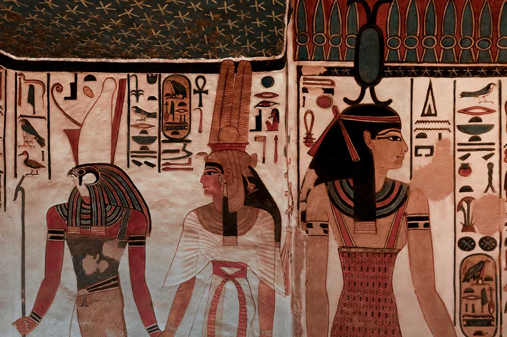

Mergulhe na grandiosidade e mistérios do antigo Egito.
A Arte Egípcia nasceu há mais de 3000 anos a.C. e está ligada à religiosidade, visto que a maior parte das suas
estátuas, pinturas, monumentos e obras arquitetônicas se manifesta em temas religiosos.
Assim, o interior dos templos, bem como as peças ou espaços relacionados com o culto dos mortos, eram
artisticamente
elaborados. Os túmulos são um dos aspectos mais representativos da arte egípcia.
Isso porque os egípcios acreditavam na imortalidade da alma e que ela poderia sofrer eternamente, caso o corpo
fosse
profanado.
Arte Egípcia: O Legado Imortal de uma Civilização
A arte egípcia, uma das mais antigas e ricas tradições artísticas do mundo, é conhecida por sua simetria,
simbolismo
e estilo característico que perdurou por mais de três milênios. Desenvolvida em um contexto de crenças
religiosas e
rituais funerários, essa arte foi usada como um meio de comunicação com os deuses e como uma forma de garantir a
vida eterna dos faraós e nobres.
Desde as grandiosas pirâmides até as delicadas joias e esculturas, a arte egípcia expressa uma profunda
reverência
pela vida, morte e divindade. Seus artistas criaram obras que, além de embelezar, transmitiam poderosas
mensagens
espirituais e políticas, imortalizando os feitos de uma das mais fascinantes civilizações da antiguidade.

Arquitetura Monumental
A arquitetura egípcia é marcada por construções colossais que visavam honrar os deuses e assegurar a eternidade
dos
faraós. Os templos, obeliscos e pirâmides são exemplos imponentes dessa arte, projetados com uma precisão
matemática
que reflete a importância religiosa e o poder político do antigo Egito.
- Pirâmides de Gizé:As maiores e mais famosas pirâmides, construídas para os faraós
Quéops,
Quéfren e Miquerinos.
- Templo de Karnak: Um dos maiores complexos religiosos do mundo antigo, dedicado ao deus
Amon-Rá.
- Templo de Abu Simbel: Escavado na rocha e dedicado a Ramsés II, famoso por suas
gigantescas
estátuas na fachada.
Esculturas Divinas e Arte Funerária
As esculturas egípcias são famosas por sua rigidez e formalidade, refletindo a crença na imutabilidade e na
eternidade. Esculturas de deuses, faraós e figuras importantes eram criadas para servir de receptáculo para os
espíritos na vida após a morte. A arte funerária, por sua vez, era rica em detalhes, simbolismo e beleza, com a
intenção de guiar e proteger os mortos em sua jornada para o além.
- Máscara de Tutancâmon: Um dos artefatos mais conhecidos, representa o jovem faraó com
perfeição e majestade.
- Estátuas de Hórus: O deus falcão, protetor do faraó, frequentemente representado ao
lado
dos
reis.
- Os Colossos de Memnon: Duas gigantescas estátuas que guardavam o templo funerário de
Amenófis
III.
Hieróglifos e Pinturas
Os hieróglifos, a escrita sagrada dos egípcios, eram mais do que simples comunicação; eram uma forma de arte.
Combinados com pinturas detalhadas, contavam histórias, registravam feitos e ofereciam preces aos deuses. As
pinturas nas tumbas e templos capturam cenas do cotidiano, rituais e crenças espirituais, proporcionando uma
visão
única da vida no antigo Egito.
- A cor, o simbolismo e a precisão dos detalhes nessas pinturas revelam a importância de cada elemento e a
crença
na vida após a morte.
O Legado da Arte Egípcia
A arte egípcia não apenas refletiu o poder e a religiosidade de uma civilização, mas também inspirou inúmeras
culturas ao longo dos séculos. Sua influência pode ser vista na arte greco-romana e até nas tendências
neoclássicas
e contemporâneas. Estudar e preservar essa arte é essencial para entender a história da humanidade e a
continuidade
cultural que ela representa.